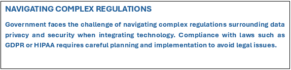

COMPUTER HARDWARE AND SOFTWARE IN COMMUNITY INSTITUTIONS
OVERVIEW OF COMPUTER HARDWARE AND SOFTWARE
CENTRAL PROCESSING UNIT (CPU)
The Central Processing Unit, commonly known as the CPU, is often reffered to as the brain of the computer. It executes instructions and manages processes, making it essential for the overall functionality of the system. Without a CPU, the computer cannot perform any operations, as it interprets and prcosses all of tha data.
RANDOM ACCESS MEMORY (RAM)
Random Access Memory, or RAM, is a crucial component that temporarily stores data for quick access by the CPU. This memory is vital for multitasking, allowing users to run multiple applications simultaneously without significant performance degradation. The more RAM a computer has, the better it can handle complex tasks or multiple programs.
STORAGE DEVIDES: HDD VS SSD
Random Access Memory, or RAM, is a crucial component that temporarily stores data for quick access by the CPU. This memory is vital for multitasking, allowing users to run multiple applications simultaneously without significant performance degradation. The more RAM a computer has, the better it can handle complex tasks or multiple programs.
THE ROLE OF SOFTWARE
TYPES OF SOFTWARE
Software is categorized into system software and application software. Systen software, such as operating systems like Winows and macOS, manages the computer's hardware and core functions, ensuring that all components work harmoniously. Application software, on the other hand, includes specific programs that allow users to perfrom tasks, such as productivity tools and educational applications.
OPERATING SYSTEM (OS)
An Operating System (OS) is a critical piece of system software that manages hardware resources and provides a user interface. Popular examples include Window, macOS, and Linux. The OS ensures that application can effectively communicate with the hardware, facilitating a smooth user experience. Budget and pricing for PowerPoint software vary, with options ranging from free (like Google Slide) to subscriptional-based (like Microsoft 365) When choosing slideshow softwares, consider the budget and pricing options to ensure it aligns with your financial constraints and provides necessary features.
UTIILITY SOFTWARE
Utility software includes programs that perform maintenance tasks on a computer system. These can range from antivirus software that protects against malware to dusk management tools that optimize storage and performance. Such utilities are essential for ensuring the longetivity and efficiency of both hardware and software.
INTEGRATION OF HARDWARE AND SOFTWARE

INTEGRATION AND CHALLENGES IN COMMUNITY INSTITUTIONS
INTEGRATION OF TECHNOLOGY IN EDUCATION
1. DIGITAL RESOURCES
Technology auds teacgubg abd kearbubg by providing a wealth of digital resources that enhance student engagement and comprehension. These resources include interactive multimedia, educational software, and online platforms taht allow for personalized learning experiences tailored to individual student needs.
2. STREAMLINED ADMINISTRATION
The integration of technology in educational institutions streamlines administration processes, making it easier for educators to manage student records, attendance, and grades. This efficiency not only saves time but also reduces the potential for errors in record-keeping.
3. IMPROVED TEACHING METHODS
With the aid of technology, educators can adopt innovative teaching methods that foster collaboration and critical thinking. Tools such as virtual classrooms and educational apps facilitate interactive learning environments where students can explore subjects more deeply.
CHALLENGES IN HEALTHCARE INTEGRATION
HIGH DIGITAL COST
One of the primary challenges in integrating technology into healthcare institutions is the high initial investment required for quality hardware and software. These costs can be a significant barier, particularly for smaller facilities or those with limited budget.
DATA PRIVACY CONCERNS
The integration of technology in healthcare comes with high stakes regarding data privacy. Sensitive patient information must be protected through robust cybersecurity measure to prevent data breaches, which can compromise patient trust and lead to legal actions.
STAFF TRAINING REQUIREMENT
To effectively utilize new technologies, healthcare staff must undergo training to become familliar with the systems in place. Lack of proper training can lead to inefficiencies and increased risk of errors in patient care, highlighting the need for ongoing education and support.
GOVERNMENT DIGITAL INTEGRATION CHALLENGES
